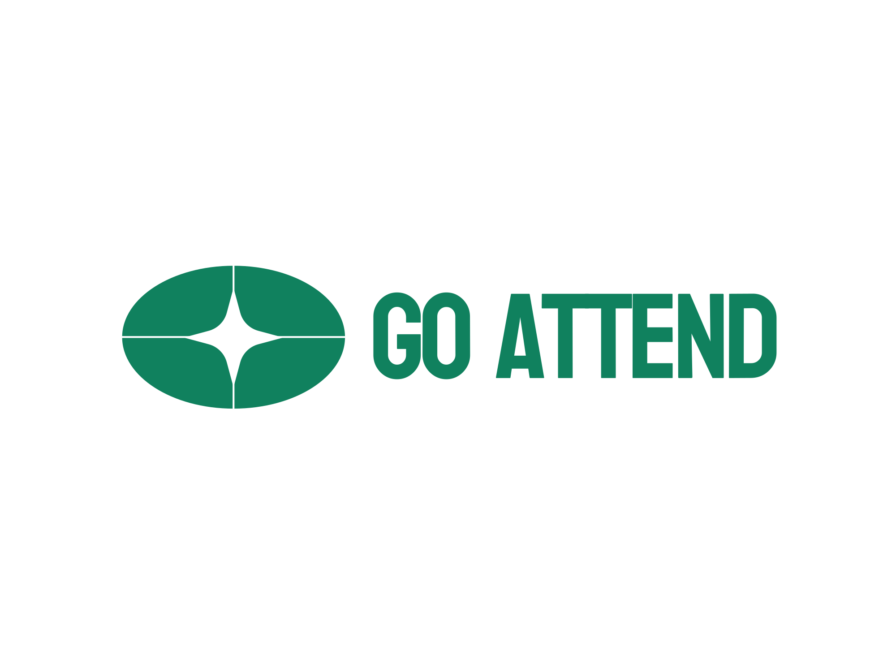

Mahasiswa Teknik Informatika | Web Developer
Saya adalah mahasiswa Teknik Informatika di Universitas Muhammadiyah Gresik (semester 6) dengan latar belakang pendidikan SMK jurusan Rekayasa Perangkat Lunak.
Memiliki pengalaman praktis di bidang IT Support dan administrasi perkantoran, dengan keahlian utama dalam membangun aplikasi web full-stack menggunakan teknologi PHP, MySQL, dan JavaScript.
Daftar project nyata yang telah dikembangkan secara spesifik.
Sistem manajemen perpustakaan berbasis web untuk mengotomatisasi transaksi peminjaman dan pengembalian buku, kalkulasi denda, serta pembayaran denda non-tunai berbasis QR Code.

Aplikasi absensi karyawan berbasis web dengan metode verifikasi ganda berbasis GPS dan tangkapan kamera front-end untuk memperkuat validitas kehadiran.

Platform pesanan e-commerce kafe berbasis meja menggunakan scan QR Code yang terhubung langsung dengan SIM admin kafe.
Sistem temu kembali informasi ulasan restoran berbasis Vector Space Model (VSM) dan NLP Bahasa Indonesia untuk mengatasi ulasan slang dan salah ketik.
Fokus studi pada pemrograman web, sistem basis data, rekayasa perangkat lunak, dan kecerdasan buatan/NLP.
Mempelajari dasar-dasar algoritma pemrograman, perancangan database, pemrograman berorientasi objek (PBO), serta pengembangan aplikasi desktop dan web.
Mari berdiskusi tentang peluang kerja, kolaborasi proyek, atau pengembangan web.
muhammadrafipratamaputra00@gmail.com